NotebookLM — Fundamentos
Explore o NotebookLM do Google para analisar documentos estratégicos do TRE-RN. Crie um caderno inteligente, converse com seus documentos e descubra os recursos surpreendentes do Estúdio.
Objetivos e Material de Apoio
- Compreender a estrutura e os pilares do PEJERN 2021–2026
- Identificar como os indicadores se relacionam aos macrodesafios do CNJ
- Criar prompts estratégicos para análises institucionais
- Dominar todas as funcionalidades do Estúdio do NotebookLM
- Aplicar a IA como apoio à elaboração de relatórios e propostas de melhoria
📦 Material de Apoio
Baixe os arquivos abaixo. Você vai carregá-los no NotebookLM durante a oficina.
| Arquivo | Descrição | Link |
|---|---|---|
| 📄 Resolução TRE-RN nº 49/2021 | Institui o PEJERN 2021–2026 | ⬇ Baixar PDF |
| 📄 Anexo I — PEJERN 2021–2026 | Objetivos, iniciativas e indicadores | ⬇ Baixar PDF |
| 📄 Anexo II — Glossário de Indicadores | Definições e fórmulas de cálculo | ⬇ Baixar PDF |
| 📄 Mapa Estratégico 2021–2026 | Visão gráfica da estratégia | ⬇ Baixar PDF |
| 🌐 Resolução CNJ nº 325/2020 | Estratégia Nacional do Poder Judiciário | 🔗 Abrir na web ↗ |
Criar o Caderno e Adicionar Fontes
Faça login com sua conta Google
Crie um novo caderno
Clique em "Criar" e nomeie como "PEJERN 2021-2026 — TRE-RN"
Adicionar fonte (ícone ➕)
Selecione "Fazer upload" e carregue os 4 PDFs
Adicione a Resolução CNJ nº 325
Selecione "Site" e cole: https://atos.cnj.jus.br/atos/detalhar/3365
Renomeie cada fonte
Clique nos ⋮ ao lado de cada fonte → "Renomear". Sugestões: "Resolução TRE-RN 49/2021", "Objetivos e Indicadores", "Glossário", "Mapa Estratégico", "Resolução CNJ 325/2020"
Conversando com seus Documentos
Agora a parte mágica: perguntar sobre o conteúdo dos documentos carregados. A IA responderá exclusivamente com base nessas fontes, indicando de onde tirou cada informação.
Na área "Conversas", digite os prompts abaixo, um por vez:
Salvando respostas importantes
Salve nas Observações
Clique em "Salvar nas observações" para guardar as respostas mais úteis para consulta futura
Salve pelo menos as respostas dos prompts 1 e 2. Elas serão úteis no Estúdio.
Explorando o Estúdio
O Estúdio transforma seus documentos em diferentes formatos. Acesse clicando em "Estúdio" no painel direito. Vamos explorar cada funcionalidade:
🎙️ Resumo em Áudio
Gera um áudio (estilo podcast) dos documentos. Formatos: Análise detalhada (cobertura completa), Resumo (pontos principais), Crítica (pontos fortes/fracos) e Debate (perspectivas opostas). Configure também o idioma desejado.
Gere um Resumo em Áudio
Formato "Resumo" e idioma "Português". Na personalização:
🎬 Resumo em Vídeo
Gera vídeos explicativos usando o modelo NanoBanana do Google para ilustrações — um diferencial que produz visuais ricos sem habilidade em design. Formatos: Vídeo explicativo (narração detalhada) e Resumo (versão condensada).
Estilos visuais disponíveis: escolha o que melhor combina com o público e a finalidade do vídeo.
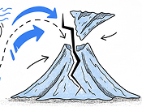
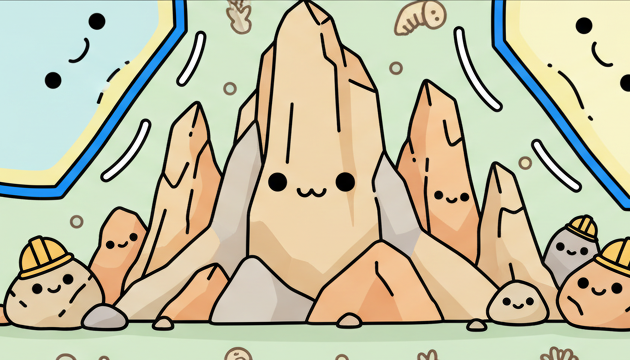
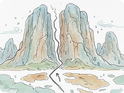
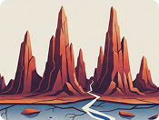
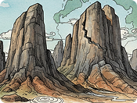
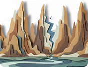
Gere um Resumo em Vídeo
Formato "Vídeo explicativo", estilo "Clássico" (ou "Aquarela"). Na personalização:
🧠 Mapa Mental
Gera um mapa visual conectando conceitos dos documentos. Excelente para compreender relações entre objetivos, indicadores e macrodesafios.
Gere um Mapa Mental
Clique em "Mapa mental" — geração automática
Uma funcionalidade poderosa: ao clicar em qualquer nó (retângulo) do mapa mental, o NotebookLM abre automaticamente uma conversa no chat focada exatamente naquele tema. Experimente clicar em um objetivo ou macrodesafio para aprofundar a análise!
📝 Relatórios
Modelos pré-formatados: Crie do zero (livre), Documento de resumo (síntese executiva), Guia de estudo (material didático) e Post de blog (artigo para divulgação).
Gere um Documento de Resumo
Selecione "Documento de resumo" para uma síntese executiva do planejamento
🃏 Cartões didáticos
Transforme dados complexos em Flashcards interativos. O NotebookLM gera cartões com perguntas e respostas para testar seus conhecimentos sobre o PEJERN de forma dinâmica, facilitando a fixação de metas, conceitos e fórmulas de indicadores.
Gere Cartões didáticos
Escolha a quantidade e o nível de dificuldade (Fácil, Médio ou Difícil). Na personalização:
📋 Testes
Avalie seu nível de compreensão com questionários gerados sob medida. Os Testes de Múltipla Escolha do NotebookLM ajudam a identificar lacunas de conhecimento e fixar os pontos mais complexos, transformando a leitura passiva em um diagnóstico ativo de aprendizado.
Gere um Teste
Configure o número de questões e o nível de dificuldade. Na personalização:
📊 Infográfico
O Infográfico é a ferramenta definitiva para síntese executiva. Ele transforma as informações densas em um layout visual organizado, ideal para apresentações rápidas, murais informativos ou para facilitar a compreensão da estratégia por quem tem pouco tempo para leitura.
Estilos visuais disponíveis: escolha a estética que melhor se adapta ao tom da sua comunicação.
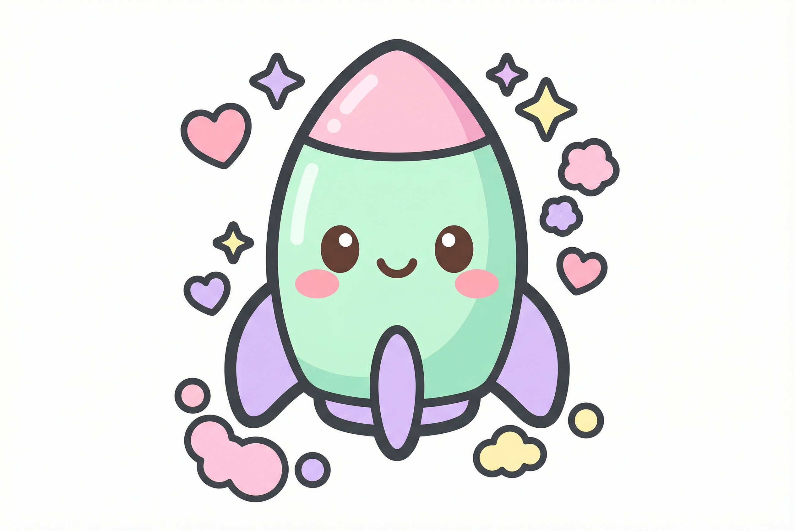
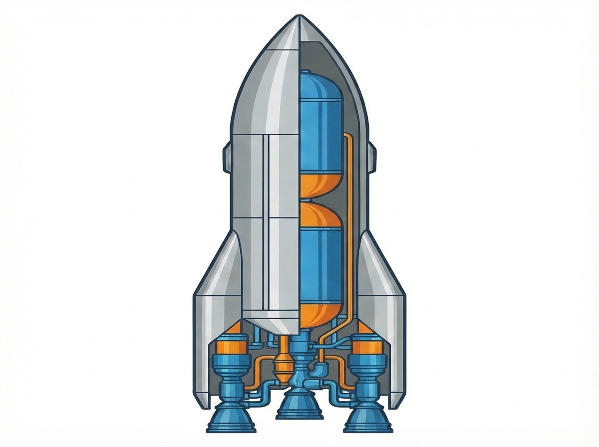
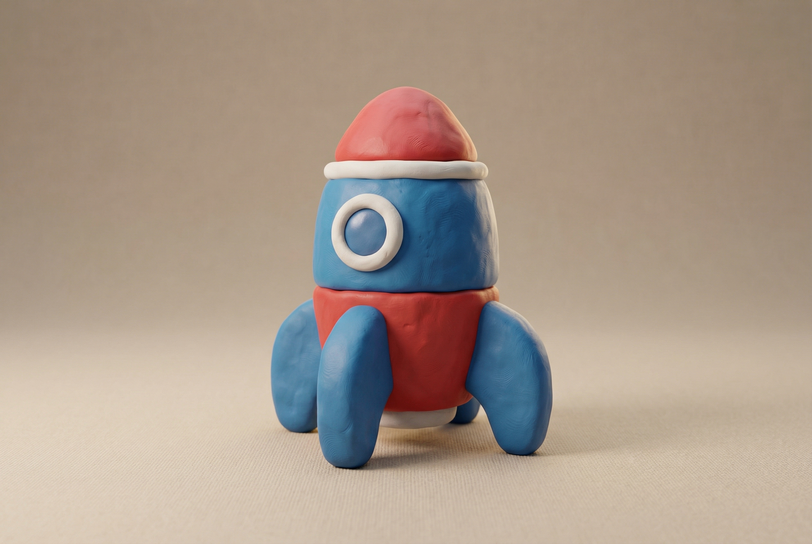
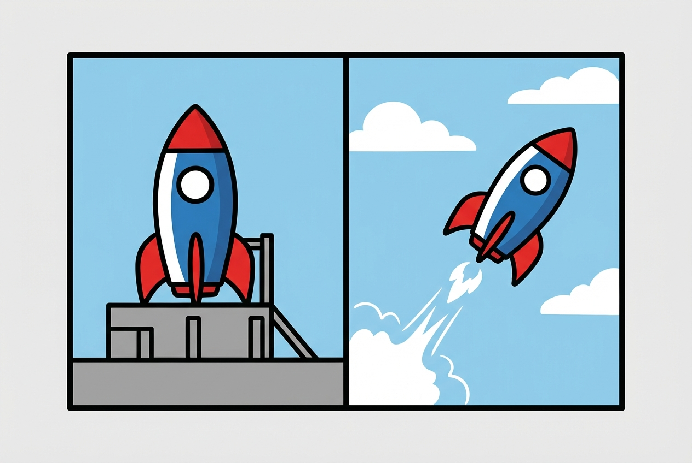
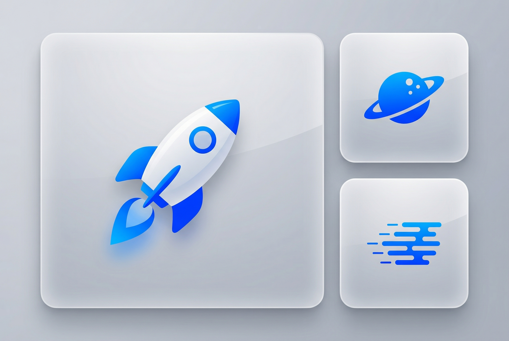
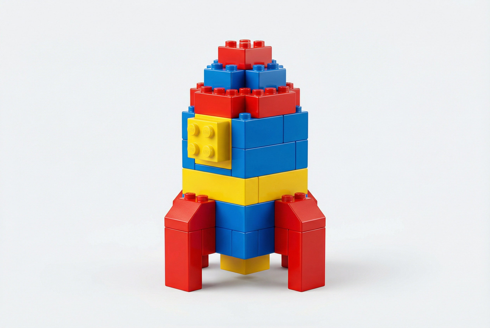
Gere seu Infográfico Estratégico
Escolha o estilo visual desejado e clique em "Gerar". Na personalização:
📽️ Apresentação de Slides
Transforme seus documentos em uma estrutura pronta para apresentações profissionais. O modelo de Apresentação Detalhada cria slides com conteúdo robusto e visual balanceado, enquanto os Slides do Apresentador oferecem tópicos enxutos com notas de apoio completas para guiar sua fala em reuniões ou eventos institucionais.
Gere uma Apresentação de Impacto
Selecione o formato desejado e defina o idioma. Na personalização:
📈 Tabela de Dados
A Tabela de Dados é a ferramenta ideal para desestruturar PDFs e consolidar informações técnicas. Ela extrai automaticamente metas, fórmulas e indicadores, organizando-os em linhas e colunas que podem ser facilmente exportadas para planilhas eletrônicas para análises mais profundas.
Consolide seus Dados em Tabela
Clique em "Tabela de dados" e utilize o prompt de extração abaixo:
Resumo e Próximos Passos
| Funcionalidade | O que faz | Melhor uso no TRE-RN |
|---|---|---|
| Fontes | Base de conhecimento | Resoluções, normas, relatórios |
| Conversas | Perguntas com citação de fontes | Pesquisa e análise documental |
| Observações | Salva insights | Bases de referência |
| Áudio | Podcast dos documentos | Estudo em trânsito |
| Vídeo | Explicativo com NanoBanana | Apresentações e divulgação |
| Mapa Mental | Mapa visual de conceitos | Relações estratégicas |
| Relatórios | Documentos formatados | Briefings, guias de estudo |
| Cartões / Testes | Material de estudo e avaliação | Capacitação e revisão |
| Infográfico | Visualização compacta | Comunicação interna |
| Slides | Apresentações completas | Reuniões gerenciais |
| Tabela de Dados | Extração tabular | Consolidação de indicadores |
Na Oficina 03 — Relatório de Eventos, você vai usar o NotebookLM para transformar áudios de palestras em relatórios estruturados.